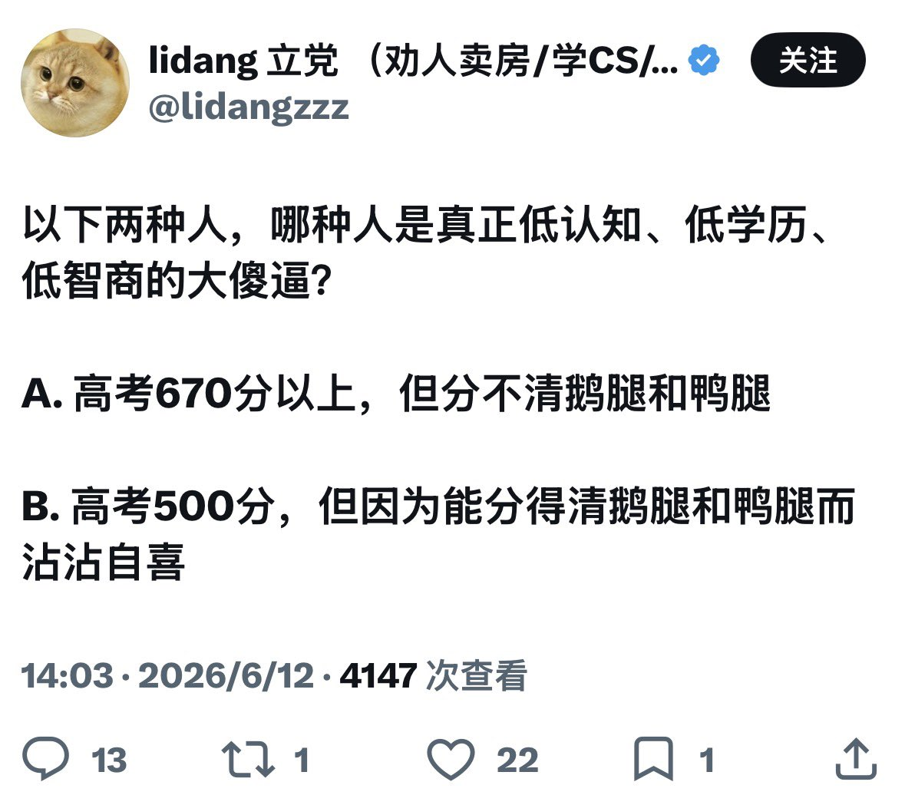

サイバー環状線
@CyberKanjousen
C. 把「用『吃假鹅腿』当作身份认同的是低认知」以及「不做任何论证就否定他人观点的是低认知」这两个观点一概偷换成「分不清鸭腿鹅腿是低认知」。
整个事件的重点在于「能不能分清鸭腿鹅腿」上吗？另外和高考分数又有什么关系？

サイバー環状線
@CyberKanjousen
C. 把「用『吃假鹅腿』当作身份认同是低认知」以及「不做任何论证就否定他人观点」这两个观点一概偷换成「分不清鸭腿鹅腿是低认知」。
整个事件的重点在于「能不能分清鸭腿鹅腿」上吗？另外和高考分数又有什么关系？ https://t.co/yABte3DiK1 https://t.co/9BKpvFrLiJ
lidang 立党 （劝人卖房/学CS/买SP500/纳100/OpenAI/Anthrop第一人）
@lidangzzz
以下两种人，哪种人是真正低认知、低学历、低智商的大傻逼？
A. 高考670分以上，但分不清鹅腿和鸭腿
B. 高考500分，但因为能分得清鹅腿和鸭腿而沾沾自喜